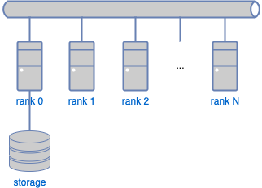

3. インストール
3.1. 動作環境
ProteinDFはいくつかの形式で配布されています。 READMEファイルが添付されている場合は、まずREADMEファイルをご覧下さい。
ProteinDFの動作には以下の動作環境が必要です。
UNIX/Linux オペレーティングシステム
Cランタイムライブラリ(通常はOSに同梱されています)
bash
BLAS, LAPACKライブラリ
MPI実行環境(並列版のみ)
Distributed matrix operation (ScaLAPACK) library (optional)
3.1.1. ハードウェアとオペレーティングシステム
POSIX準拠のコンピュータシステムで動作します。 現在、以下の計算機システムで動作確認が行われています。
SGI Altix 3000 series
Cray XT-5, XT-6
一般的なx86 PC Linuxでも動作します。
3.1.2. Assumed computing environment and operations
3.1.3. メモリとディスク
計算モデルの大きさに応じて必要なメモリ量が異なります。 また、並列計算を行う場合、 行列演算にLAPACKを使用する場合とScaLAPACKを使用する場合でも、 1ノードあたりに必要なメモリ量が変わります。 LAPACKを使用する場合は、各ノードに搭載されているメモリ容量が計算可能なサイズの上限です。 一方、ScaLAPACKを使用する場合は、全ノードで計算領域を分散保持しますので、 全ノードのメモリ容量が計算可能サイズの上限になります。 ただし、この他にも計算可能サイズを決定する要因がありますので 目安としてください。
警告
32bit OSでは扱えるメモリサイズ、ファイルサイズなど幾つかの制限事項がある場合があります。
3.1.4. Python module
ProteinDFの動作には、 いくつかのpythonスクリプトが用意されています。 これらpythonスクリプトは、ProteinDFの実行そのものには必要ありませんが、 計算結果の解析用として用意されています。 これらpythonスクリプトの動作には以下のソフトウェア(モジュール)が必要です。 これらのソフトウェアの環境構築は、それぞれのシステムの方針に従って下さい。
python(version 3.5以上)
argparseモジュール
numpyモジュール
matplotlibモジュール
MessagePackモジュール
YAMLモジュール
3.2. インストールと準備
配布パッケージによって、インストールの形態が異なります。 READMEファイルが添付されている場合は、READMEファイルの指示に従って下さい。
3.2.1. 環境変数
ProteinDFの実行には、以下の環境変数を設定する必要があります。 利用する環境に応じて、適切に環境変数を設定してください。
3.2.1.1. PDF_HOME
ProteinDFパッケージをコピーしたディレクトリを指定します。
例えば、/usr/local/ProteinDF に本パッケージをコピーしたとき、 ログインシェルにbashを利用している場合は.bashrcに以下を追加してください。
export PDF_HOME=/usr/local/ProteinDF
3.2.1.2. OMP_NUM_THREADS
OpenMPにおける最大スレッド数を設定します。 ビルド時にOpenMPを有効にする必要があります。
3.2.1.3. OMP_SCHEDULE
OpenMPにおける並列スケジュールのタイプとチャンクサイズを設定できます。 ビルド時にOpenMPを有効にする必要があります。
3.2.2. ソースからのビルド
3.2.2.1. cmakeの実行
ProteinDFではMakefileの作成にcmakeを利用しています。 任意のディレクトリにて、ソースディレクトリを指定してcmakeを実行します。 例えばtarballを展開したディレクトリの直下にbuildディレクトリを作成する場合、 以下のように実行します。
$ mkdir build
$ cd build
$ cmake ..
注釈
cmakeは自動的にビルド環境を調査し、ライブラリの場所を設定します。 調査結果はcmakeの実行時に出力されます。 出力結果をファイルに保存して後に参照したい場合は、teeコマンドを利用して $ cmake .. 2>&1 | tee out.cmake のように実行します。
以下によく用いられる変数を示します。 詳しくは cmake -L または cmake -LA をご覧ください。
--DCMAKE_INSTALL_PREFIX=PATH
プログラムのインストール先を指定します。 デフォルトは/usr/localです。 ユーザーのホームディレクトリなどにインストールするときに用いられます。
--with-blas=location
BLASライブラリの場所を指定します。
--with-lapack=location
Specify the location of the LAPACK library.
--with-scalapack=location
Specify the location of the ScaLAPACK library.
Environment variable CC,CXX,MPICXX
Specifies the options to pass to the C/C++ compiler. Use this variable to specify the options to the OpenMP compilers, etc.
Environment variable CFLAGS,CXXFLAGS
Specify options for C/C++ compiler. Instructions to the compiler, such as OpenMP, should be specified in this environment variable.
3.2.2.2. "make" の実行
cmake コマンドを実行すると、Makefile が作成されます。make コマンドを実行してプログラムをビルドします。
$ make 2>&1 | tee out.make
3.2.2.3. プログラムのインストール
"make"を実行した後、実行ファイル・データを所定のパスにインストールします。
$ make install 2>&1 | tee out.make_install
インストールが実行されると、以下のファイルがコピーされます。
${PDF_HOME}/bin/PDF.x
${PDF_HOME}/bin/PPDF.x
${PDF_HOME}/data/basis2
3.2.2.4. うまく行かない場合
境によってはスクリプトが実行できない、ビルドできないなどの問題が発生するかもしれません。 その場合は、各スクリプトの出力(上記の操作の場合、out.configure, out.make, out.make_install)をよくチェックしてください。